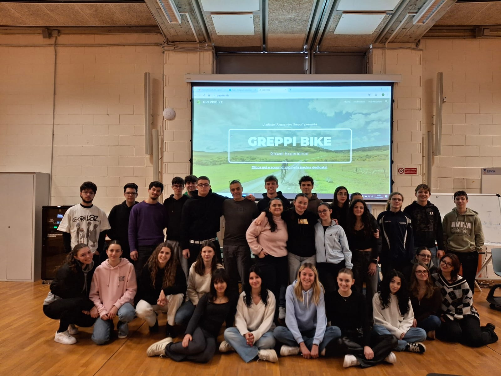
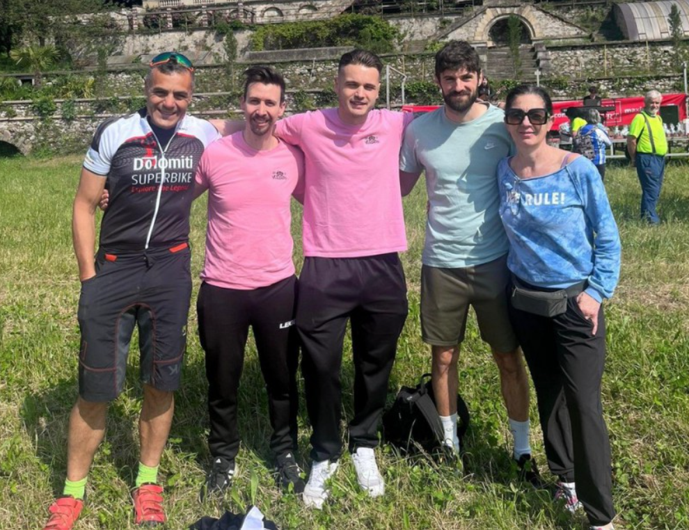
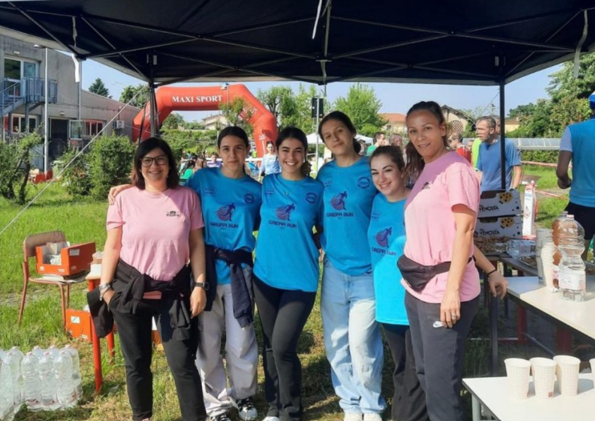

Il Nostro Comitato
Il Comitato Sportivo Scolastico dell’Istituto di Istruzione Superiore “Alessandro Greppi” nasce dalla collaborazione e dall’impegno dei docenti di Scienze Motorie, con l’obiettivo di promuovere lo sport come elemento centrale della vita scolastica. Attraverso diverse iniziative e attività, il comitato lavora per diffondere tra gli studenti i valori dello sport, del benessere e della partecipazione attiva alla comunità scolastica.
Il progetto si inserisce in un percorso educativo più ampio che vede l’attività sportiva non solo come momento di movimento, ma anche come occasione di crescita personale, collaborazione e sviluppo di uno stile di vita sano. Le attività promosse dai docenti mirano a coinvolgere studenti e comunità scolastica, creando opportunità che rafforzino il senso di appartenenza all’istituto.
Le risorse raccolte attraverso queste iniziative vengono reinvestite nella scuola con uno scopo preciso: migliorare e sviluppare gli spazi dedicati allo sport. Questo impegno ha già contribuito alla realizzazione e al potenziamento di ambienti scolastici sportivi, come la nuova palestra del complesso di Villa Greppi, offrendo agli studenti strutture sempre più adeguate e moderne.
In questo modo il Comitato Sportivo Scolastico rappresenta un punto di riferimento per la promozione dell’attività fisica all’interno dell’istituto, contribuendo concretamente a costruire una scuola più attenta al benessere, allo sport e alla crescita degli studenti.
🎯 La Nostra Missione
Promuovere stili di vita sani e attivi, favorendo l'inclusione e il senso di appartenenza scolastica attraverso eventi sportivi di qualità, aperti a tutta la comunità del Greppi.
💪 I Nostri Valori
Inclusione - Lo sport per tutti
Salute - Stili di vita attivi
Comunità - Legami che durano
Sostenibilità - Rispetto dell'ambiente
I Nostri Eventi Principali
- Corri Greppi - La corsa campestre d'istituto con 5km di pura energia in mezzo alla natura brianzola
- Greppi Bike - Una pedalata ecologica e inclusiva di 15km tra le colline del lecchese
- Festa Primaverile - Tornei interclasse di calcetto, pallavolo e basket per chiudere l'anno in allegria
Il Nostro Team
Siamo coordinati dai docenti del dipartimento di Scienze Motorie e supportati da uno staff dedicato di studenti volontari appassionati di organizzazione e sport.

Il Comitato Studentesco
Studenti appassionati che organizzano gli eventi sportivi

Coordinatori e Volontari
Docenti e studenti che rendono possibile ogni evento

Staff Operativo
Il cuore pulsante delle nostre manifestazioni
Serve aiuto?
Crediamo nel potere dello sport di unire persone e comunità. Se vuoi unirti al nostro team o hai suggerimenti, contattaci!